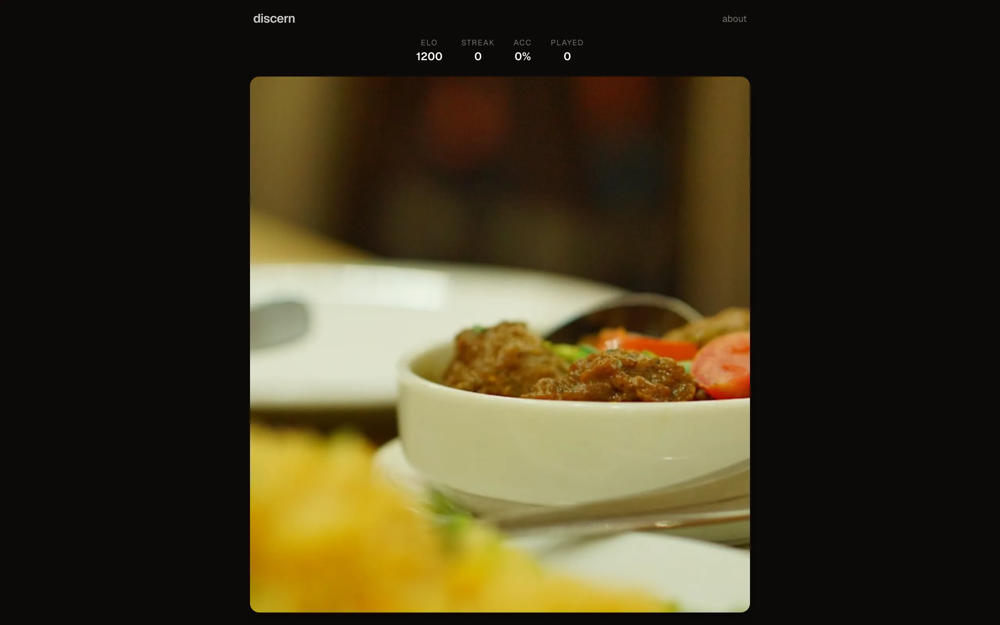
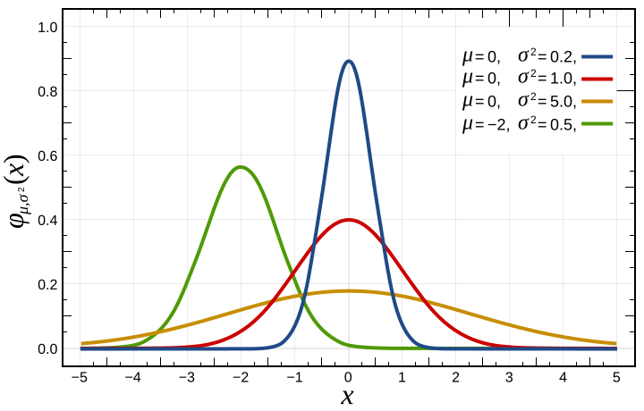
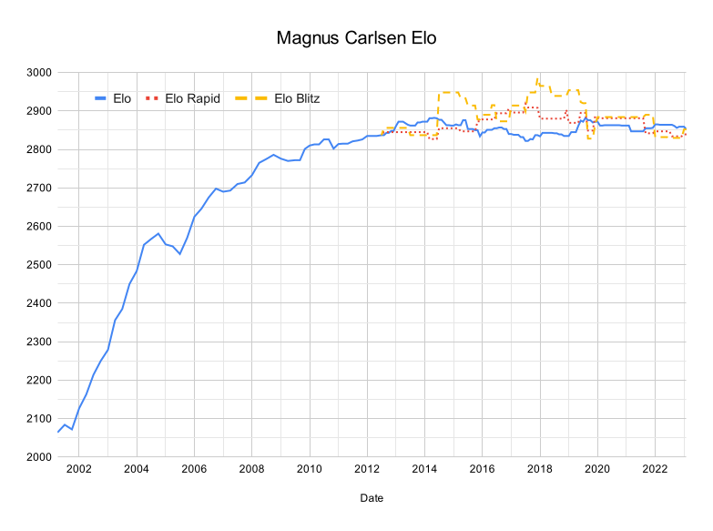

You see a photo. It could be a real photograph pulled from Unsplash or Pexels, or it could be generated by Flux or Stable Diffusion. You swipe right for real, left for AI. The app tells you if you were correct, updates your Elo rating, and serves the next image. As you get better, the images get harder. As you get worse, they get easier.
The game sources real photos from Unsplash, Pexels, and Pixabay across seven categories: people, landscapes, animals, food, architecture, art, and street photography. AI images are generated by three services in rotation: Cloudflare Workers AI (Flux Schnell), Hugging Face, and Gemini 2.5 Flash. New images are ingested on a cron schedule, roughly 50 per cycle, split evenly between real and generated.
{kind=link}
Dual Elo system
Both players and images carry Elo ratings. A new player starts at 1200. When you guess correctly, your rating goes up and the image's rating goes down (it was too easy to detect). When you guess wrong, the opposite happens. The expected probability that a player with rating \(R_p\) correctly classifies an image with rating \(R_i\) follows the logistic model:
\[E = \frac{1}{1 + 10^{(R_i - R_p)/400}}\]After each game, both ratings update by \(K(S - E)\) where \(S \in \{0, 1\}\) is the actual outcome (1 = correct, 0 = fooled). New players use \(K = 48\) for their first 30 games so their rating converges faster; after that, \(K\) drops to 32. The 400 in the denominator sets the scale: a 400-point gap corresponds to a 10:1 odds ratio. During the provisional period, the server skips updating image Elo to prevent noisy early play from corrupting difficulty scores.
Image Elo also gets recalibrated nightly using empirical fool-rate. Let \(f\) be the fraction of players who misclassified an image. The empirical rating maps this to the Elo scale:
\[R_{\mathrm{emp}} = 1200 + 400 \cdot \log_{10}\!\left(\frac{f}{1 - f}\right)\]An image that fools 50% of players gets \(R_{\mathrm{emp}} = 1200\); one that fools 90% drifts toward 1580; one that fools 10% drops to 820. The nightly pass blends 30% empirical and 70% current rating (\(R' = 0.7 R + 0.3 R_{\mathrm{emp}}\)) to prevent wild swings while still anchoring ratings to observed difficulty.

{kind=link}

{kind=link}
Adaptive difficulty
When the server selects the next image, it queries for images within a \(\pm 200\) Elo window of the player's current rating: \(|R_i - R_p| \leq 200\). At this distance the expected score ranges from about 0.24 to 0.76, keeping the challenge calibrated without being trivial or impossible. A player at 1400 sees images with roughly 55-65% fool rates against their skill level. A player at 900 sees images with obvious artifacts.
Within the eligible pool, selection favors images that have been shown less frequently. This spreads exposure across the pool and ensures newly ingested images accumulate enough data to stabilize their Elo quickly. The system also balances real and AI images based on recent history, preventing long streaks of one category.
Anti-cheat
The server never sends the answer to the client. API responses contain only the image ID, URL, and dimensions. The is_ai field stays in the database. When you submit a swipe, the server looks up the ground truth from its own records, validates that the image was actually served to your device, rejects responses faster than 300 milliseconds or older than five minutes, and blocks duplicate answers for the same image. There's nothing useful to find in the network tab.
Swipe UX
The card uses Motion (Framer Motion) for drag gestures with velocity detection. As you drag left, the card glows blue. As you drag right, it glows orange. Release past the threshold and the card flies off-screen. The result flashes green or red for 400 milliseconds, and the next card is already loaded underneath. Submission happens asynchronously in the background so the UI never blocks waiting for a server response.
A Zustand store maintains a queue of five pre-decoded images. As soon as the current card starts its exit animation, the client fetches a replacement. This keeps the experience seamless at swipe speed. Device ID, stats, and category preferences persist to localStorage. There are no accounts and no login.
Infrastructure
The app runs on Cloudflare Workers with D1 for the database and R2 for image storage. The frontend is Next.js 16 bridged to Workers via OpenNext. A separate Worker runs the ingestion pipeline on a schedule managed by cron-job.org. Small batches fire frequently throughout the day: each trigger pulls a few real photos from the stock APIs or generates a handful of AI images, validates formats and dimensions, computes perceptual hashes to prevent duplicates, and uploads to R2. All three image generators are on free tiers, with automatic fallback if one hits its rate limit.
At the current scale, the whole thing runs within Cloudflare's free tier: 100K Worker requests per day, 5M D1 row reads, 10GB of R2 storage.